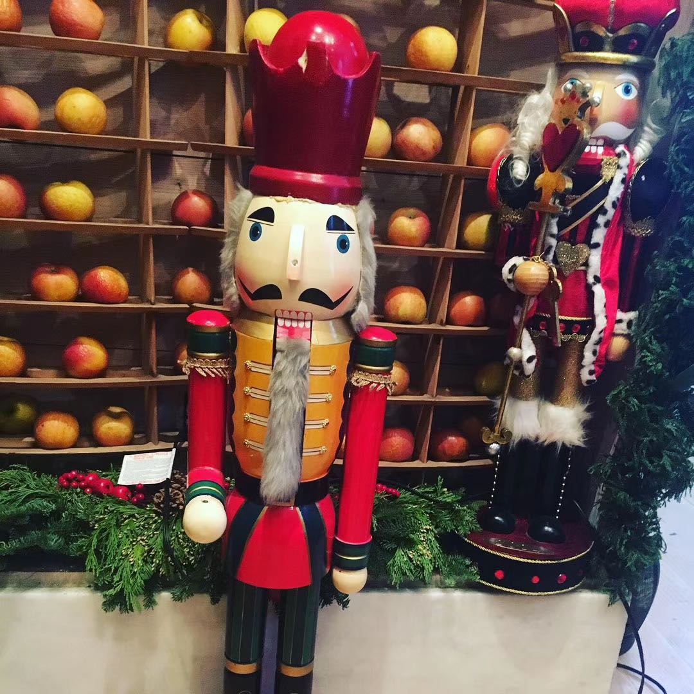
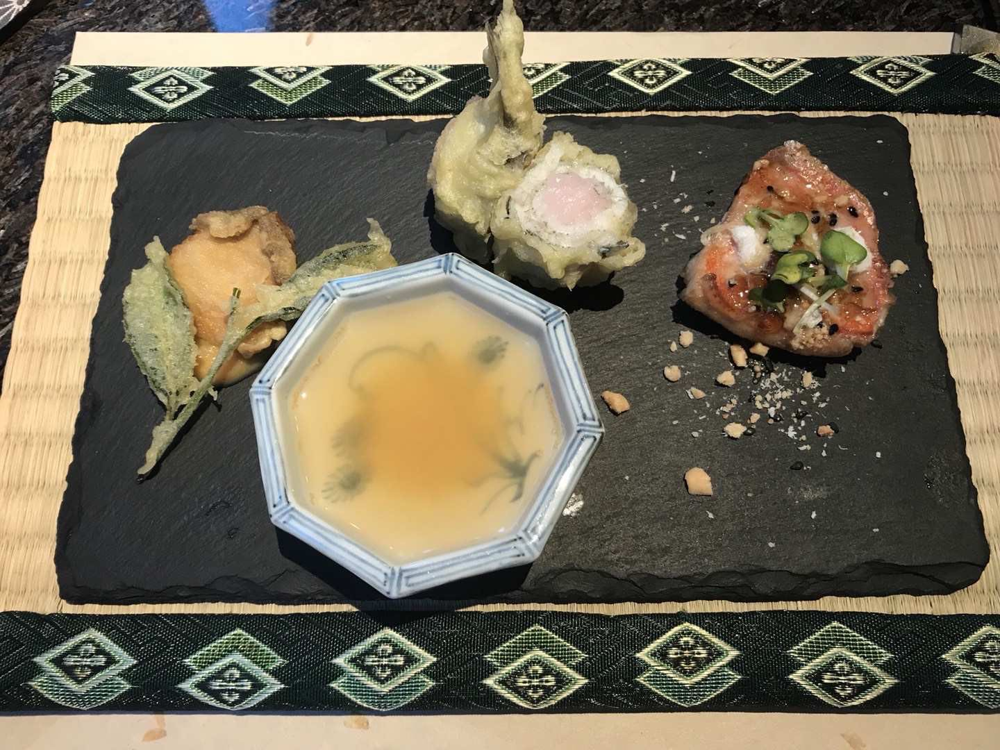

白天谈吃｜Bouley & 料理人上田
好像最近“中餐日作”的“头灶”很火，那就来谈谈“吃”吧。
人均2000+的fine dining，评论区难免一片关于价值观、智商税的争吵。但说白了，有些敲键盘的就是柠檬了。。。每个人吃什么是自己的选择。餐厅敢做，敢标价；食客愿意掏钱消费，买氛围格调也好，买精致吃食也好，有买有卖，很符合逻辑的一件事。从我的角度，比较关心的点是，剩下的鸡架子有没有人吃，食材会不会被浪费。。。如果说这家店打着日式思维卖精致料理，但是却在糟蹋食材，那就是空有Omakase的营销，没有灵魂了。
我一直以来对吃的态度就是：三分是菜，七分是人。人既是同食的朋友，也是厨师的态度。如果没有人同去，那氛围上的落差就得靠美食来补了，就要吃好一点(・∀・＊)。现在印象最深刻的精致料理有两家店。一家是在纽约和学姐吃的Bouley at home，一家是香港已经倒闭的创意怀石料理人上田。
Bouley的主厨融合日料和西餐，整套吃下来让人非常舒服。店在下城一个挺偏的小巷子里，装修严谨而温馨，不会因为太高端让人放不开。那次好像临近圣诞吧，门口放了超级可爱的一个胡桃夹子。店里灯暗暗的，桌上一盏小小的黄灯。餐前面包种类挺多，还不错。小哥生怕你吃不饱，会时不时来问问要不要加一块。走的时候还会送一个小面包，熔岩巧克力味的。那次的菜什么味道已经记不清了，记得的是学姐吐槽了上城一家天价的日料有多难吃；学姐那天牙疼不吃冰淇淋；我那天感冒发烧，吃完半夜吐到怀疑人生；我就是难受也要顶着大冷天出去吃好吃的！…

吃过倒闭绝版的餐厅，我也是有点欠欠的小自豪在身上的。当时学茶道，特别想吃怀石，就挑了一家最便宜的。老板的美食态度绝绝子，第一道是海胆抹茶粥，我还特地（做死又有点装地）问了服务员姐姐用的是什么抹茶，姐特地拿茶罐子给我看，具体是什么已经忘了，肯定不是五十龄。印象特别深刻的菜品是一个炸鱼天妇罗。鱼里面包着比樱花粉还淡一点的糯米，外面香香脆脆，糯米温软带点甜，沾着有点小辣的淡姜汁，口感舒服到心窝子里，可惜只有一个。那天好像厨师看我一个人吃饭，等菜的时间有点长，送了一个甜点还是咋的，好感度拉满。。。
